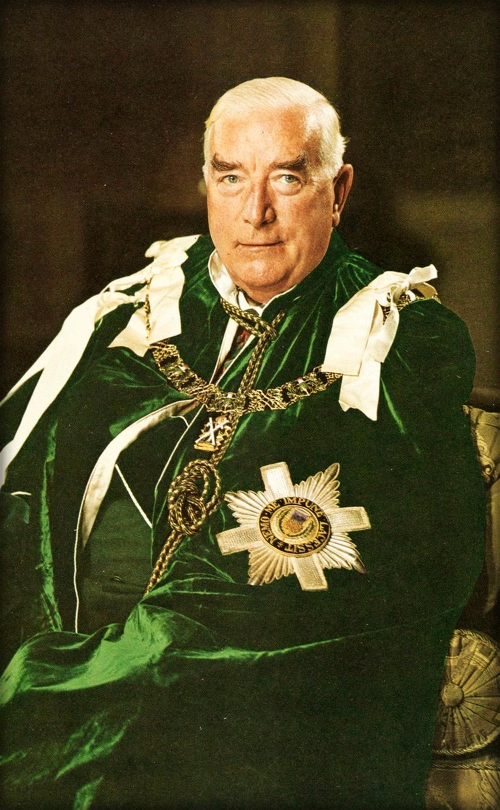
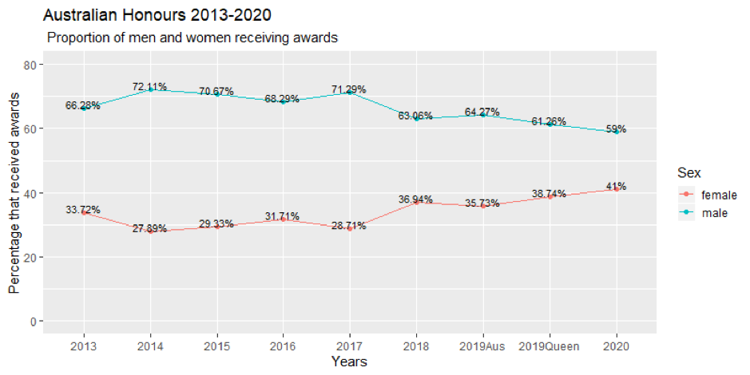
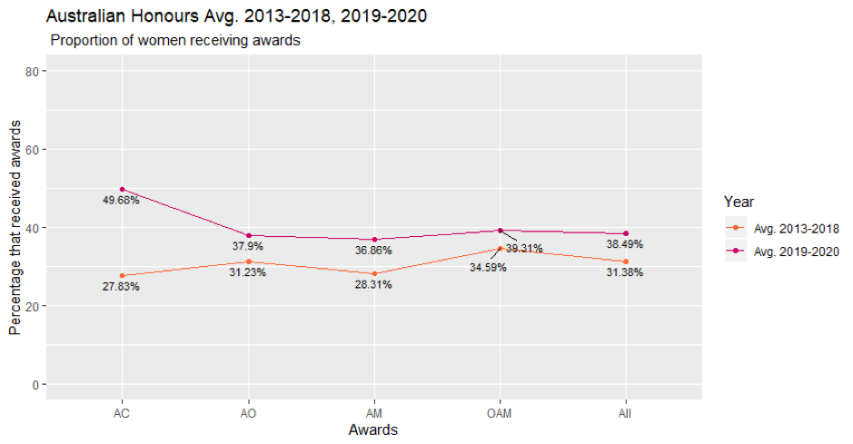
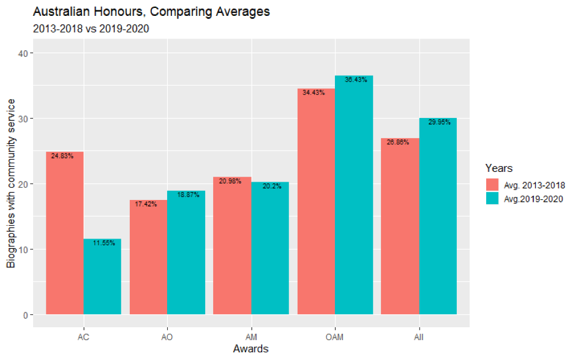

I wrote a piece on Australia's Honours system for Australia Day last year and decided this year to make it an annual event. So here's this year's column, which in the 'original' had a couple of hundred words edited out of it to meet the Conversation's arbitrary limit of 900 words. (How can you run a self-respecting corporate operation without arbitrary policies? Or KPIs on the monthly 'performance' of your contribution.)
In any event, here's the article in the full glory of its 1,071 word and 6061 character glory.
We think of Gough Whitlam’s government as the most radical in our post-war history, dedicated to its leader’s “crash through or crash” style. (In the end, it crashed.) But Whitlam’s approach to Australian honours was bold only on the surface.
Imperial Honours were scrapped. Today it’s rare for Australia’s worthies to run round town being called “Sir Bruce and Lady So and So” or “Dame Raylene” by every Tom, Dick and Harry in the street (or Sir Tom, Sir Dick and Sir Harry at the club). But when you look closer, it’s clear that Whitlam didn’t really refurbish imperial honours so much as rebrand them.
Back then there was a hierarchy of awards and though there was some correlation between your achievement and the level of honour you received for it, where you already stood in the social hierarchy counted for much more.
If you were out there selflessly contributing to your local community, you might eventually get an MBE (that’s a Member of the Most Excellent Order of the British Empire). If you got luckier and had made more of a splash, you might get an OBE. That made you an “Officer” of the very same order of most excellent British things. Above that was the CBE which made you a “Commander” of exceedingly excellent entities.
At the very serious end of this spectrum were two awards. A prominent departmental secretary or businessperson might be made a Knight Commander of the Most Excellent Order of the British Empire, or a Dame Commander if she were a woman. They could call themselves Sir Bruce or Dame Raylene. (I know of no transitions from Knight to Dame of the Most Excellent Order of the British Empire, but for all I know they’re all over this back in the Home Country alongside the official coins and tea towels honouring Brexit.)
If you were really special – say you were a governor-general or ex-prime minister or perhaps an internationally recognised scientist or a top business figure, you might become Knight Grand Cross of the Most Excellent Order of the British Empire or Dame Grand Cross. Still, in everyday life, you only got called “Sir Bruce” or “Dame Raylene”, so mostly only Sir Tom, Sir Dick and Sir Harry down at the club would know that you were a cut above them.
There were all manner of gongs to be won even above that for the very, very special, at which point the fancy dress came out and the fun really got going. Prime Minister
Menzies couldn’t get enough of them and, on the death of the incumbent in the position (Sir Winston Churchill) the Queen invested him Lord Warden of the Cinque Ports and Constable of Dover Castle, which included an official residence at Walmer Castle for his annual visits to Britain.
Under the new Australian honours system with which the Whitlam Government replaced this system , there is no more Sir Bruce and Lady So and So or Dame Raylene. But virtually everything else has been left intact. The new Australian Honours were described as “orders of chivalry” which is quaint. And chivalrous I guess. They were formally instituted not by the Whitlam Government, but by Her Majesty (on Prime Minister Whitlam’s advice) and her crown sits atop all the Australian Honours medals. As previously, there’s a civilian and a military division.
Letters appear after people’s name if they want to use them, just as in the old days. But there’s a new twist. No, I’m not talking about all the people who now write “AM” on their Twitter profile. If you’re awarded an honour, in addition to the medal placed around your neck at the ceremony, you get a lapel pin.
Because all the honours get one and most seem to wear them around town and not just at official functions or in Anzac Day marches where those who won medals are celebrated for them, in some ways, the new awards are more rather than less conspicuous than the occasional Sir Bruce or Dame Raylene for the very special ones in the old days.
And the values that drove them are much the same. The rank or status of the reward you receive depends mostly on your social status rather than your achievement.
As I noted last year, the level of gratitude among recipients seems to follow an equal and opposite arc. Those at the bottom seem the most thrilled for being recognised the least. As Anne Summers lamented in 2013:
Seven years ago I nominated a woman I admire for an Australian honour. It took two years but it came through and she was awarded a Medal of the Order of Australia (OAM) for a lifetime of work with victims of domestic violence. I was disappointed she had not been given a higher award – I had hoped for an AM (Member of the Order of Australia) at the very least – but she was thrilled and so was her family.
In the run-up to commenting on these honours last year, Lateral Economics sampled about half of them from 2018 back to 2013. We’ve now looked at both the Australia Day and Queen’s birthday lists from 2019 and the 2020 Australia Day list. I can report that the features I was most critical of last year are alive and well, though in one respect they’re improving (slowly).
The under-representation of women seems to be improving, if very slowly. And it’s unclear how secure the gains are, given that women’s under-representation increased quite sharply in 2014 and reached its recent zenith in 2017. (I note it surged after the election of Coalition in 2013, but have insufficient data to be confident of any trends.)

Last year I reported that, with the exception of the highest award – the AC, of which there are very few (generating a very volatile series) – women become substantially better represented in the ‘lower’ awards. This was a weak effect and has since faded to insignificance.

We also looked at how many honours went to those whose online biographies released with the honours include work done without personal gain. Here, as you can see from the figure below, (again with the exception of the volatile AC results), the more selfless you are, the lower in the hierarchy your award is likely to be. There is no sign of change.

Thanks to Shruti Sekhar for research assistance
The honours should not be given to people who have just been doing their jobs or have made a squillion in business or something. I reckon most people who become squillionaires have ripped off someone, absolutely minimised their taxes or something else not very ethical at some time or other. I have read somewhere that even Our Don Bradman somehow got the better of his business partner. So why reward such people, they have already been rewarded.
I think the awards should go to the Mother Theresas of Australia, nobody else.
For next year, Nick, can you explore the data base to see how many of the recipients of the top awards are formal or informal politicians and how much they have donated to the main political parties. I reckon you would get an highly significant regression coefficient.
Always interesting to hear your views, Nick dear!
I've just completed (at last!) my year letter for 2019 - and if you send me an email address, I'll send you a copy.